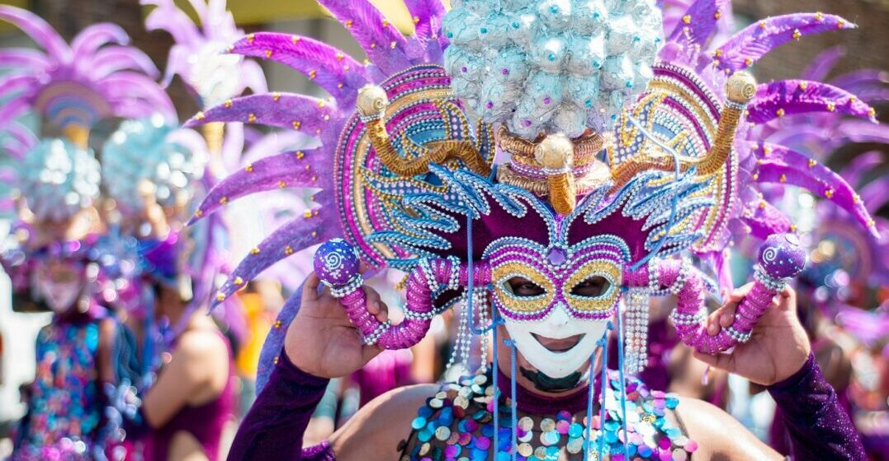

France's calendar is rich with festivals, national holidays, and cultural celebrations that reflect the country's history, regional diversity, and joie de vivre. From Bastille Day fireworks over the Eiffel Tower to the dazzling Festival of Lights in Lyon, from the carnival in Nice to the celebrated film festival in Cannes, there is a spectacular event happening somewhere in France in every season of the year. Timing your visit to coincide with a local festival is one of the best ways to experience the authentic spirit of France.
France's National Day commemorates the storming of the Bastille in 1789. Celebrations include a grand military parade down the Champs-Élysées, free concerts, public balls held by fire stations, and spectacular fireworks displays across the country. The most celebrated fireworks show takes place beneath the Eiffel Tower in Paris.
Held annually in early December, Lyon's Festival of Lights is one of the world's most spectacular visual events. Buildings, streets, and public squares across the city are transformed by breathtaking light installations created by artists from around the world. The festival draws hundreds of thousands of visitors each year.
The most prestigious film festival in the world, held each May on the glamorous French Riviera. The Palme d'Or award has been coveted by filmmakers since 1946. While the main screenings are for industry professionals, the atmosphere of Cannes during the festival — the yachts, the red carpets, the outdoor screenings — is accessible to all.
Founded in 1947, the Festival d'Avignon is one of the world's most important performing arts events. Every July, the medieval city of Avignon hosts over 1,500 performances of theatre, dance, and music across 130 venues, including the spectacular Palais des Papes courtyard.
One of the world's greatest and oldest carnivals, the Nice Carnival takes place each February with two weeks of flower battles, elaborate floats, costumed performers, and fireworks. The Battles of Flowers, where competing floats throw blossoms into the crowd, are among the most cheerful spectacles in Europe.
Every June 21st — the summer solstice — France celebrates music with the Fête de la Musique. Free concerts of every musical genre fill the streets, parks, and public squares of every city and village in France. In Paris alone, thousands of performances take place simultaneously throughout the night.
Check our travel guide for the best times to visit France and experience its celebrations.
View Travel Guide →